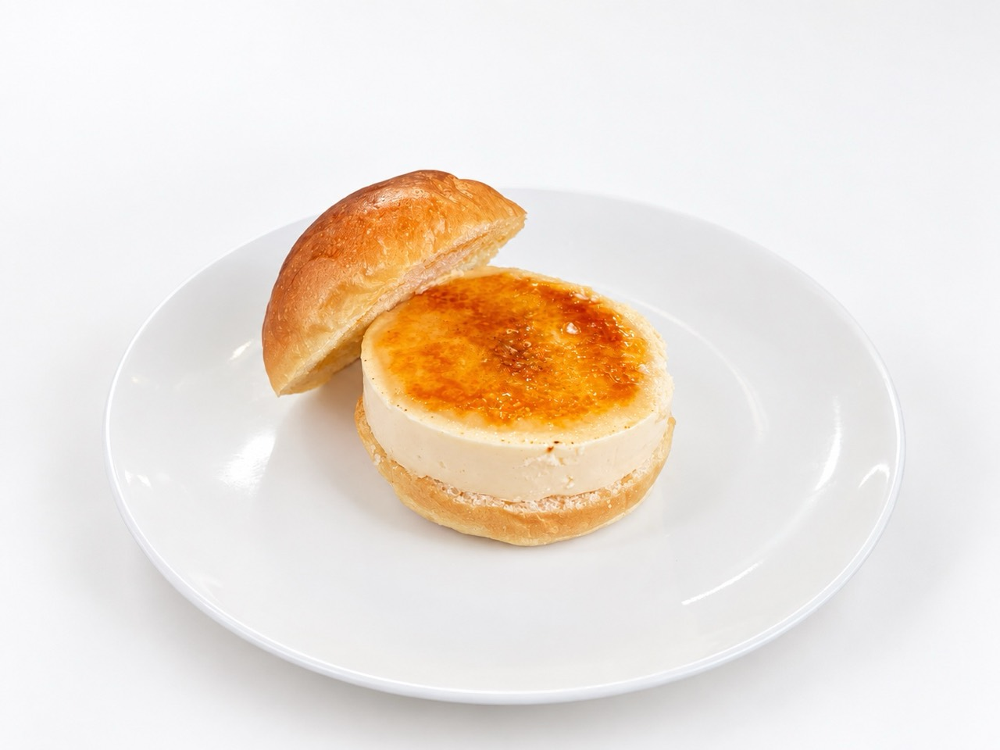
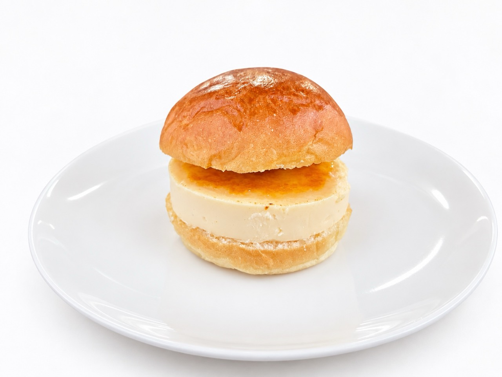

← News 一覧へパンの中に、プリンのしあわせ。
「クラシック#プリチ」をご紹介。
ふんわりバンズに、濃厚カスタードプリン。
香ばしいブリュレとほろ苦いカラメルが重なる、パン×プリンのおいしい出会い。

主役は、プリンです。
中のおいしさを引き立てる、ふんわりやさしい特製クラシックバンズ。そこに、クリチの発想から生まれた濃厚なカスタードプリンをサンドしました。
表面は香ばしくブリュレしてパリッと。ほろ苦いカラメルがプリンの味わいを引き立てます。パンとプリンがひとつになった、クラシック#プリチをお楽しみください。